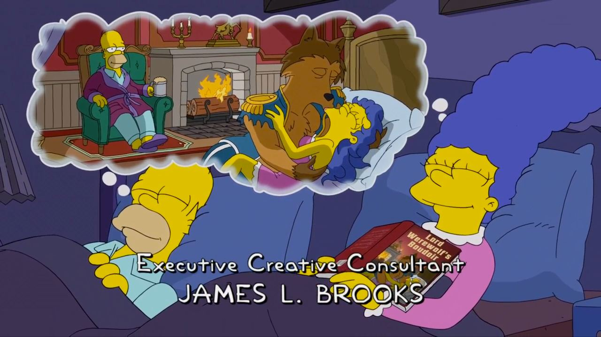

Running log#
WEEK MO TU WE TH FR SA SU TOTAL
0704 - 2 6 7 - - - 15
0711 4 - - 4 6 4 6 14
0718 - - 6 - - - - 6
0725 - - - - - - - 0
0801 10 4 6 - - - 10 30
0808 4 - 10 - 8 - - 22
0815 - 4 - 6 6 - - 16
0822 8 - - 6 - - - 14
0829 12
Climbing log#
August
9: 10a, 10c, 10c, 11a, 11a
11: 10c, 10d, 11a, 10c, 11b, 10b
16: 10b, 10d, 11a, 11a, 11a
18: 10c, 10d, 11a, 11b, 11b
Journal#
August 26, 2022 · Everything looks big when your room is too small. Visit other houses and get outside to put things back in perspective.
July 11, 2022 · Ran 4K in the morning in 22 minutes. Felt like slow-pace, but the time is the same…
July 9, 2022 · Ran 6K in the evening in 33 minutes. Felt like fast pace.
July 8, 2022 · Ran 2K in the morning. Felt like faster pace, but took actually 12 minutes.
July 7, 2022 · Ran 5K in the morning.
July 6, 2022 · Ran 2K in the morning. Again, pain in the middle of chest. Ran another 4K in the evening, without pain.
July 5, 2022 · Ran 2K in the evening. Pain in the middle of chest stopped from going on the second lap.
July 4, 2022 · Completely recovered from Covid, tested negatively.
June 30, 2022 · Almost recovered, still sleeping more, and some kidney pain.
June 29, 2022 · Feeling better, except for kidney pain.
June 28, 2022 · Slept around 20 hours, kidney pain got worse.
June 27, 2022 · Slept almost whole day, kidney pain got worse.
June 26, 2022 · Slept almost whole day, started to feel pain around kidneys. Tested positive on homekit.
June 25, 2022 · Started to experience cold symptoms: dizziness, body weakness, headache, cough, and running nose.
June 19-24, 2022 · Took a work trip to California. Caught Covid-19 somewhere around June 22.
June 15, 2022 · Topped my personal record. 6K in 35 minutes.
June 14, 2022 · Fell from a 5.11a track on my thumb toe and bent the nail. Did another 3 tracks afterwards, though.
June 8, 2022 ·
I enjoyed KK’s article on Truth vs Trust.
It talks about a utopian news outlets that track down origins of every statement.
Not a fact check (that journalists are “doing” now), just a chain of who quoted who.
The article’s start point is that we can’t infer truth from a statement itself.
But we can track who said what and an origin of every statement.
The problem is though, that for polarizing topics (where truth can’t be established, and we need to rely on trust) all modern news outlets would cover facts that are convenient for them, and omit everything else.
Which means, that trustworthiness of a source is not a scalar, but more of a 3D matrix, that has topics, time, and past dishonesty as axes.
A Tech Lead is a software engineer responsible for leading a team and alignment of the technical direction. Tech Lead has a focus on the technical aspects, or the “How.”
Tech Lead blends:
leadership skills
architecture skills
development skills
Leadership skills include:
coaching
influencing
delegation
They steer their team towards a common technical vision. They are accountable for the quality of the technical deliverables for the team.
June 7, 2022 ·
I picked up running a week ago. Today’s personal best is 4 km in 23 minutes.
Fun fact: here’s what happens when you burn a molecule of triglyceride, the predominant fat in a human body:
C55H104O6 + 78O2 --> 55CO2 + 52H2O + energy
Oxidizing 10 kilos of human fat requires inhaling 29 kilos of oxygen to produce 28 kilos of carbon dioxide and 11 kilos of water. It means that you lose roughly the same amount of fat as you sweat.
May 30, 2022 ·
TIL that The Onion posts an article with the same title: “‘No Way To Prevent This,’ Says Only Nation Where This Regularly Happens” after every mass shouting.
And ironically it does nothing to prevent this.
May 29, 2022 · we went to Rocky Gap State Park’s campground for the Memorial Day. Met few nice folks, hiked a few miles, rented a canoe for a family ride on a lake, went star watching, had a lot of meat with beer.
Whether was great except for a short rain on the first day when we had to setup the camp. We built a short zip line from 3 truck straps, which was more fun during building than riding.
I’m still a bit confused by US style camps, which have too much convenience to my taste, that doesn’t let enjoy the nature to its fullest.
May 25, 2022 · Individual [car] companies, to me? It’s a distinction without a difference.
May 24, 2022 · When director of engineering rolls up the sleeves and refactors complicated piece of code, be double-vigilant in PR review.
Software engineering skills wear out pretty quickly if not practiced daily. No matter how good the person is in non-individual-contributor capacity, it doesn’t make them good with source code.
May 23, 2022 ·
I want to experiment with hosting .deb (.rpm?) packages on GitHub pages.
So far, I found these two tutorials:
https://assafmo.github.io/2019/05/02/ppa-repo-hosted-on-github.html
https://pmateusz.github.io/linux/2017/06/30/linux-secure-apt-repository.html
Would be nice to automate the index update and GPG signing through GitHub Actions.
Packages, that I’m most interested in hosting:
Kibitzr
Arr family: Radarr, Sonarr, Lidarr.
May 22, 2022 ·
Both individuals and the larger society have agreed to a set of interlocking delicate systems that are simultaneously highly effective and spectacularly vulnerable to disruption.
May 20, 2022 · Jotted a quick note On delegation.
May 17, 2022 · Notes on stress management.
Stress management is management of body and mind. Stress is an integral part of human biology. Without stress hormones we would simple die.
Survival kit: sleep, eat, exercise.
Sleep: 7-9 hours a day. Consistent schedule for work days and weekend. Reduce screen time before sleep. Keep phone outside of bedroom.
Food: three colors of vegetables and fruits. 3 meals a day. Standard servings - no overeating.
Exercise: stretch every now and then. Brisk walks for 30 minutes.
Don’t need to start doing everything at once. Build good habits one step at a time. Lifestyle change feels like a hard work.
Avoid quick fixes: pills, drinks, energy bars, phone apps, gadgets, books, movies. Those only increase the number of things to keep track of. And the relief is only temporary.
Write down the goals, not just say it.
Note what causes stress, make a list of situations.
Practice simple meditation several times a day. Focus on breath and do a body scan.
Relax muscles while sitting, one group at a time. Neck, shoulders, arms, back, legs and feet.
Hang out with friends to feel social connection.
Sources:
May 12, 2022 · The first XKCD comic mentioned in Software Engineering at Google:
May 10, 2022 · I just tried to explain gender transformation to my kids in popular Soviet song:
Я был когда-то странной игрушкой безымянной.
Protagonist is a male (animal), but he was a toy in the past. But toy’s gender is feminine. Which makes a weird mix of two genders in one sentence separated by the time.
The opposite example blew their minds:
Я была когда-то странным утюгом безымянным.
May 7, 2022 · Weird and disturbing fantasy from The Simpsons S33.E19 “Girls Just Shauna Have Fun”

May 6, 2022 ·
Here are some of my favorite quotes from songs.
I catch myself reciting this one during tough debug sessions:
Goddamn machinery
Why don't you speak to me?
-- "The Axe" by Thom Yorke
And this I love for the structure of the sentence:
When I am king
You will be first against the wall
With your opinion
Which is of no consequence at all
-- "Paranoid Android" by Radiohead
This one is for “broken pipe” and “Socket closed”:
Communication breakdown, it's always the same
Havin' a nervous breakdown, a-drive me insane
-- "Communication Breakdown" by Led Zeppelin
May 5, 2022 ·
Surprisingly, zero intersection on most used self-hosted apps
with this guy.
May 3, 2022 ·
I need to do something meaningful with my life or I’ll be wasting it.
May 2, 2022 ·
TIL that US schools close in observance of the Islamic holiday Eid al-Fitr, a festive celebration marking the end of Ramadan, a month of fasting observed by Muslims worldwide.
But they call it Quarterly grading/planning. Maybe to not stir the masses.